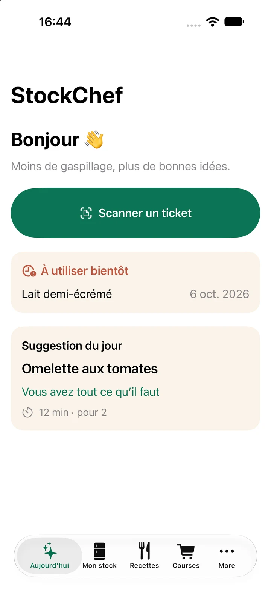

Cuisine & anti-gaspillage / BTBU

StockChef
Vos courses. Votre stock. Votre prochain repas.
Scannez vos tickets, organisez vos aliments et trouvez des recettes avec ce que vous avez. OCR local, planning de repas et liste de courses, sans compte utilisateur.
iPhone / iOS 16+ · Aucun téléchargement proposé sur ce site.
DANS STOCKCHEF
Un aperçu de votre cuisine.

Moins d’oubli. Plus d’idées.
Du ticket au stock
Analysez et corrigez les lignes de vos tickets avec une reconnaissance de texte locale.
Cuisiner ce que vous avez
Recettes, quantités par convive et planning pour organiser vos prochains repas.
Vos données, sur l’iPhone
Inventaire local, exports JSON et sauvegardes chiffrées par le mot de passe que vous choisissez.
StockChef